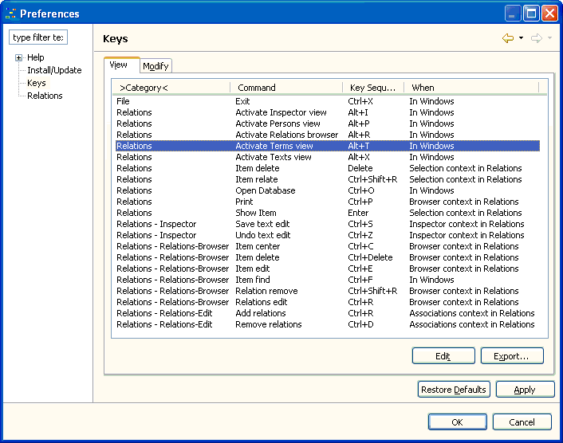
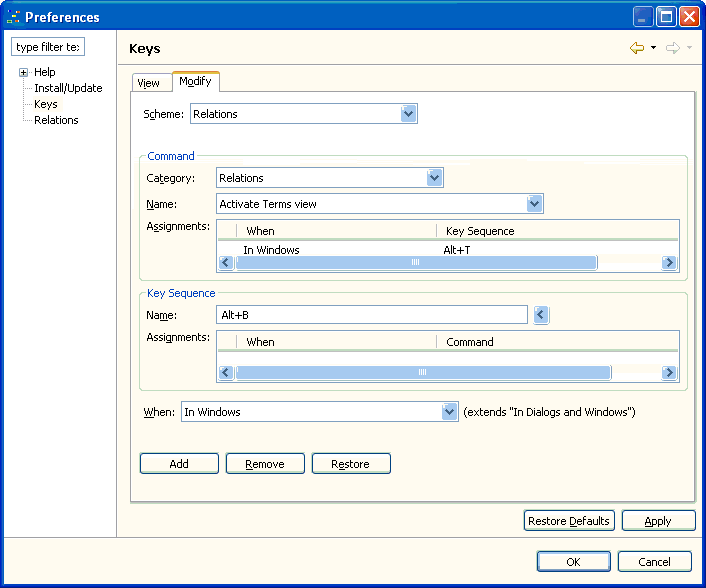

The function of the keyboard can be extensively customized in Relations application. All key customization is done on the Utilities > Preferences... > Keys preference page.

The Keys preference page
To change the key bindings to activate the Terms view you first have to select the actual key bindings and the click the edit button. This will display the Modify tab of this preference page.

The Keys preference page, modify tab
In the Modify
tab, enter the new key sequence in the Name field and click the Add button. This
will add a second key binding for the command. To remove the old key
sequence, select the entry Alt+T in the Assignments list
and click the Remove
button. Clicking the Apply
or OK
button will store the new key bindings.